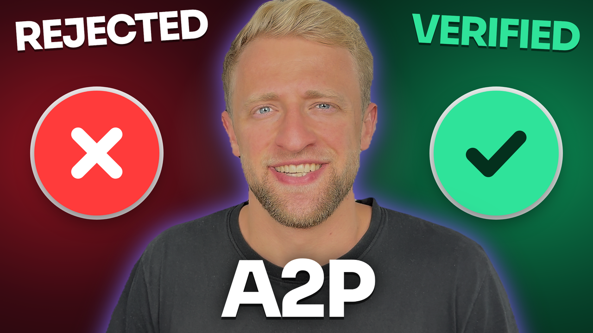
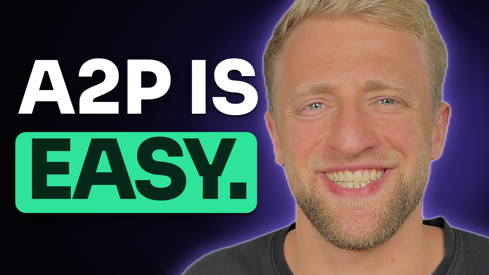
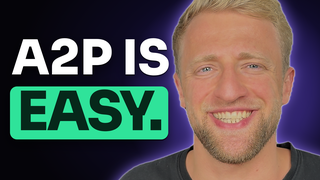
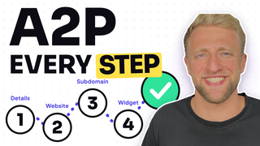
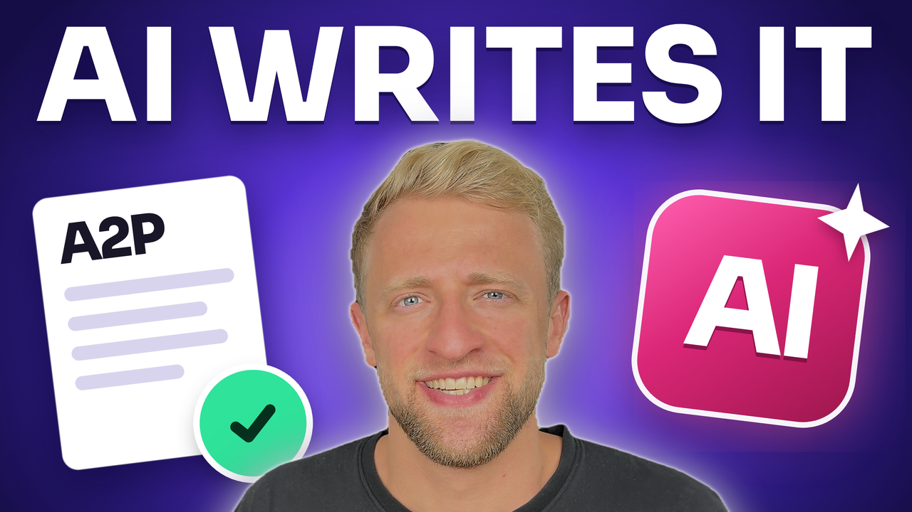
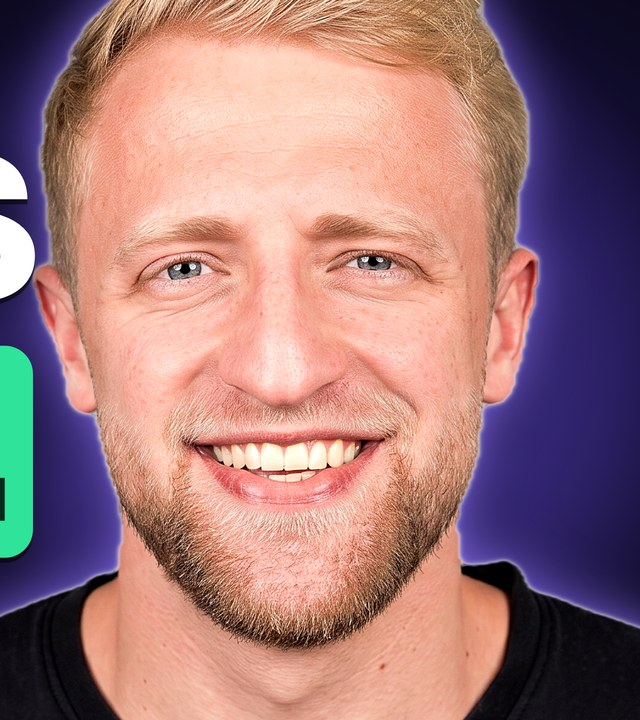
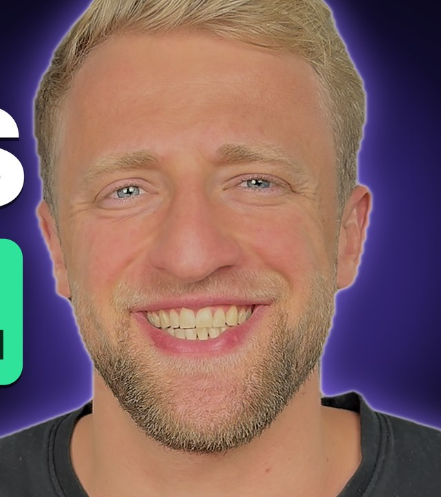
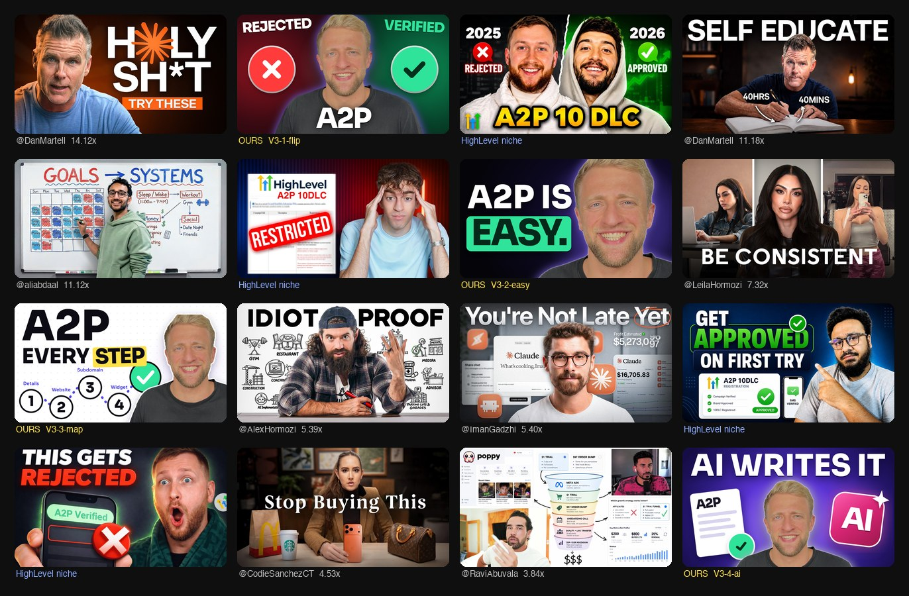

A2P thumbnails, version 3: your real face
Wed Nov 25. Every face here is a real frame of you from the A2P face camera recording. No AI face. The colour is now pulled the way the camera saw it (yesterday's conversion washed your skin pale), with a light lift. Upload 1, 2 and 3 into the YouTube thumbnail test.
Test slot 11. Rejected to Verified

search size and sidebar size
- Words on it
- REJECTED, VERIFIED, A2P
- Why
- Before and after in one frame, your real warm smile in the middle. The idea the A2P niche clicks most, drawn the plain way the top creators draw it.
Test slot 2, my pick if you only use one2. A2P is easy


search size and sidebar size- Words on it
- A2P IS EASY.
- Why
- Your biggest real smile from the recording, head as tall as the frame, three words. Reads best at the small sidebar size.
Test slot 33. Every step

search size and sidebar size- Words on it
- A2P EVERY STEP
- Why
- The only white thumbnail in a row that is all dark, with the route of steps nobody else shows.
Spare4. AI writes it

search size and sidebar size
- Words on it
- AI WRITES IT
- Why
- Spare. Use it in place of one of the three if you go with the title that opens with "Use AI".
What changed since yesterday


How they sit in a row

Ours (yellow labels) among top creator winners and the A2P niche.